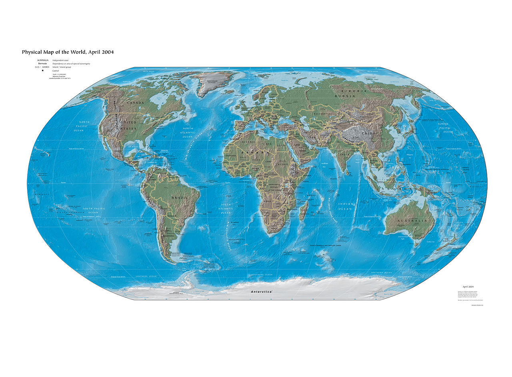

Map Page
These maps help us understand air pollution in Detroit by showing the location of the main sources of air pollution, as well as spatial patterns in air pollution level and its impacts on health.
This map shows the main sources of industrial pollution in Detroit. The dominant wind direction (wind tends to blow west to east in Detroit) means pollution from the refineries and manufacturing facilities in the southwest tends to blow towards the North End, while the waste incinerator located near I-94 and I-75 is also a major source of pollution in the neighborhood.